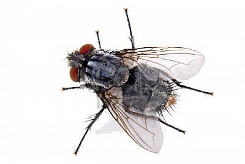
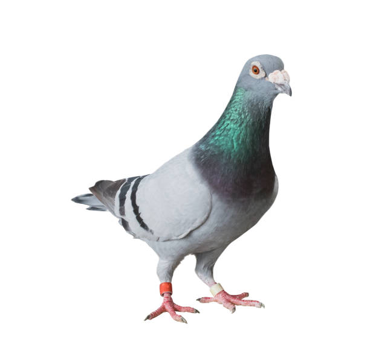
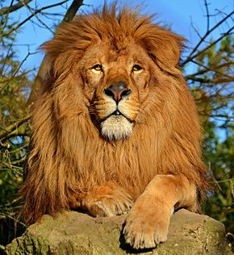

La cigale ayant chanté Tout l'été, Se trouva fort dépourvue Quand la bise fut venue. Pas un seul petit morceau De mouche ou de vermisseau. Elle alla crier famine Chez la Fourmi sa voisine, La priant de lui prêter Quelque grain pour subsister Jusqu'à la saison nouvelle. Je vous paierai, lui dit-elle, Avant l’août, foi d'animal, Intérêt et principal. La Fourmi n'est pas prêteuse, C'est là son moindre défaut. Que faisiez-vous au temps chaud ? Dit-elle à cette emprunteuse. Nuit et jour à tout venant, Je chantais, ne vous déplaise. Vous chantiez ? j'en suis fort aise, Eh bien! dansez maintenant.
La Mouche et la Fourmi contestaient de leur prix. Ô Jupiter ! dit la première, Faut-il que l’amour propre aveugle les esprits D’une si terrible manière, Qu’un vil et rampant animal À la fille de l’air ose se dire égal ? Je hante les Palais ; je m’assieds à la table : Si l’on t’immole un bœuf, j’en goûte devant toi : Pendant que celle-ci chétive et misérable, Vit trois jours d’un fétu qu’elle a traîné chez soi. Mais ma mignonne, dites-moi, Vous campez-vous jamais sur la tête d’un Roi, D’un Empereur, ou d’une Belle ? Je le fais ; et je baise un beau sein quand je veux : Je me joue entre des cheveux : Je rehausse d’un teint la blancheur naturelle : Et la dernière main que met à sa beauté Une femme allant en conquête, C’est un ajustement des Mouches emprunté. Puis allez-moi rompre la tête De vos greniers. Avez-vous dit ? Lui répliqua la ménagère. Vous hantez les Palais : mais on vous y maudit. Et quant à goûter la première De ce qu’on sert devant les Dieux, Croyez-vous qu’il en vaille mieux ? Si vous entrez partout : aussi font les profanes. Sur la tête des Rois et sur celle des Ânes Vous allez vous planter ; je n’en disconviens pas ; Et je sais que d’un prompt trépas Cette importunité bien souvent est punie. Certain ajustement, dites-vous, rend jolie. J’en conviens : il est noir ainsi que vous et moi. Je veux qu’il ait nom Mouche ; est-ce un sujet pourquoi Vous fassiez sonner vos mérites ? Nomme-t-on pas aussi Mouches les parasites ? Cessez donc de tenir un langage si vain : N’ayez plus ces hautes pensées : Les Mouches de Cour sont chassées : Les Mouchards sont pendus : et vous mourrez de faim, De froid, de langueur, de misère, Quand Phœbus régnera sur un autre hémisphère. Alors je jouirai du fruit de mes travaux. Je n’irai par monts ni par vaux M’exposer au vent, à la pluie. Je vivrai sans mélancolie. Le soin que j’aurai pris, de soin m’exemptera. Je vous enseignerai par là Ce que c’est qu’une fausse ou véritable gloire. Adieu : je perds le temps : laissez-moi travailler. Ni mon grenier ni mon armoire Ne se remplit à babiller.
Deux Pigeons s’aimaient d’amour tendre : L’un d’eux, s’ennuyant au logis, Fut assez fou pour entreprendre Un voyage en lointain pays. L’autre lui dit : « Qu’allez-vous faire ? Voulez-vous quitter votre frère ? L’absence est le plus grand des maux : Non pas pour vous, cruel ! Au moins, que les travaux, Les dangers, les soins du voyage, Changent un peu votre courage. Encore, si la saison s’avançait davantage ! Attendez les zéphyrs : qui vous presse ? un corbeau Tout à l’heure annonçait malheur à quelque oiseau. Je ne songerai plus que rencontre funeste, Que faucons, que réseaux. Hélas, dirai-je, il pleut : Mon frère a-t-il tout ce qu’il veut, Bon soupé, bon gîte, et le reste ? » Ce discours ébranla le cœur De notre imprudent voyageur ; Mais le désir de voir et l’humeur inquiète L’emportèrent enfin. Il dit : « Ne pleurez point ; Trois jours au plus rendront mon âme satisfaite : Je reviendrai dans peu conter de point en point Mes aventures à mon frère ; Je le désennuierai. Quiconque ne voit guère N’a guère à dire aussi. Mon voyage dépeint Vous sera d’un plaisir extrême. Je dirai : J’étais là ; telle chose m’advint : Vous y croirez être vous-même. » À ces mots, en pleurant, ils se dirent adieu. Le voyageur s’éloigne : et voilà qu’un nuage L’oblige de chercher retraite en quelque lieu. Un seul arbre s’offrit, tel encore que l’orage Maltraita le Pigeon en dépit du feuillage. L’air devenu serein, il part tout morfondu, Sèche du mieux qu’il peut son corps chargé de pluie ; Dans un champ à l’écart voit du blé répandu, Voit un pigeon auprès : cela lui donne envie ; Il y vole, il est pris : ce blé couvrait d’un lacs, Les menteurs et traîtres appas. Le lacs était usé ; si bien que, de son aile, De ses pieds, de son bec, l’oiseau le rompt enfin : Quelque plume y périt, et le pis du destin Fut qu’un certain vautour, à la serre cruelle, Vit notre malheureux, qui, traînant la ficelle Et les morceaux du lacs qui l’avait attrapé, Semblait un forçat échappé. Le vautour s’en allait le lier, quand des nues Fond à son tour un aigle aux ailes étendues. Le Pigeon profita du conflit des voleurs, S’envola, s’abattit auprès d’une masure, Crut, pour ce coup, que ses malheurs Finiraient par cette aventure ; Mais un fripon d’enfant (cet âge est sans pitié) Prit sa fronde, et du coup tua plus d’à moitié La volatile malheureuse, Qui, maudissant sa curiosité, Traînant l’aile et tirant le pied, Demi-morte et demi-boiteuse, Droit au logis s’en retourna : Que bien, que mal, elle arriva, Sans autre aventure fâcheuse. Voilà nos gens rejoints ; et je laisse à juger De combien de plaisirs ils payèrent leurs peines. Amants, heureux amants, voulez-vous voyager ? Que ce soit aux rives prochaines. Soyez-vous l’un à l’autre un monde toujours beau, Toujours divers, toujours nouveau ; Tenez-vous lieu de tout, comptez pour rien le reste. J’ai quelquefois aimé : je n’aurais pas alors, Contre le Louvre et ses trésors, Contre le firmament et sa voûte céleste, Changé les bois, changé les lieux Honorés par les pas, éclairés par les yeux De l’aimable et jeune bergère Pour qui, sous le fils de Cythère, Je servis, engagé par mes premiers serments. Hélas ! quand reviendront de semblables moments ? Faut-il que tant d’objets si doux et si charmants Me laissent vivre au gré de mon âme inquiète ? Ah ! si mon cœur osait encore se renflammer ! Ne sentirai-je plus de charme qui m’arrête ? Ai-je passé le temps d’aimer ?
Sultan Léopard autrefois Eut, ce dit-on, par mainte aubaine, Force bœufs dans ses prés, force Cerfs dans ses bois, Force moutons parmi la plaine. Il naquit un Lion dans la forêt prochaine. Après les compliments et d’une et d’autre part, Comme entre grands il se pratique, Le Sultan fit venir son Vizir le Renard, Vieux routier et bon politique. Tu crains, ce lui dit-il, Lionceau mon voisin : Son père est mort, que peut-il faire ? Plains plutôt le pauvre orphelin. Il a chez lui plus d’une affaire ; Et devra beaucoup au destin S’il garde ce qu’il a sans tenter de conquête. Le Renard dit branlant la tête : Tels orphelins, Seigneur, ne me font point pitié : Il faut de celui-ci conserver l’amitié, Ou s’efforcer de le détruire, Avant que la griffe et la dent Lui soit crue, et qu’il soit en état de nous nuire : N’y perdez pas un seul moment. J’ai fait son horoscope : il croîtra par la guerre. Ce sera le meilleur Lion Pour ses amis qui soit sur terre, Tâchez donc d’en être, sinon Tâchez de l’affaiblir. La harangue fut vaine. Le Sultan dormait lors ; et dedans son domaine Chacun dormait aussi, bêtes, gens ; tant qu’enfin Le Lionceau devient vrai Lion. Le tocsin Sonne aussi-tôt sur lui ; l’alarme se promène De toutes parts ; et le Vizir, Consulté là-dessus dit avec un soupir : Pourquoi l’irritez-vous ? La chose est sans remède. En vain nous appelons mille gens à notre aide. Plus ils sont, plus il coûte ; et je ne les tiens bons Qu’à manger leur part des moutons. Apaisez le Lion : seul il passe en puissance Ce monde d’alliés vivants sur notre bien : Le Lion en a trois qui ne lui coûtent rien, Son courage, sa force, avec sa vigilance. Jetez-lui promptement sous la griffe un mouton : S’il n’en est pas content jetez-en davantage. Joignez-y quelque bœuf : choisissez pour ce don Tout le plus gras du pâturage. Sauvez le reste ainsi. Ce conseil ne plut pas, Il en prit mal, et force états Voisins du Sultan en pâtirent : Nul n’y gagna ; tous y perdirent. Quoi que fît ce monde ennemi, Celui qu’ils craignaient fut le maître. Proposez-vous d’avoir le Lion pour ami Si vous voulez le laisser craistre.
Le Singe avec le Léopard Gagnaient de l’argent à la foire : Ils affichaient chacun à part. L’un d’eux disait : Messieurs, mon mérite et ma gloire Sont connus en bon lieu ; le Roi m’a voulu voir ; Et si je meurs il veut avoir Un manchon de ma peau ; tant elle est bigarrée, Pleine de taches, marquetée, Et vergetée, et mouchetée. La bigarrure plaît ; partant chacun le vit. Mais ce fut bientôt fait, bientôt chacun sortit. Le Singe de sa part disait : Venez de grâce, Venez Messieurs ; Je fais cent tours de passe-passe. Cette diversité dont on vous parle tant, Mon voisin Léopard l’a sur soi seulement ; Moi je l’ai dans l’esprit : votre serviteur Gille, Cousin et gendre de Bertrand, Singe du Pape en son vivant ; Tout fraîchement en cette ville Arrive en trois bateaux exprès pour vous parler ; Car il parle, on l’entend, il sait danser, baller, Faire des tours de toute sorte, Passer en des cerceaux ; et le tout pour six blancs : Non, Messieurs, pour un sou ; si vous n’êtes contents, Nous rendrons à chacun son argent à la porte. Le Singe avait raison ; ce n’est pas sur l’habit Que la diversité me plaît, c’est dans l’esprit : L’une fournit toujours des choses agréables ; L’autre en moins d’un moment lasse les regardants. Oh ! que de grands Seigneurs au Léopard semblables, Bigarrés en dehors, ne sont rien en dedans !